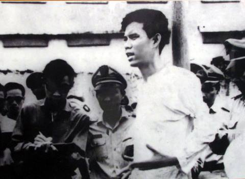

Anh Trỗi sinh ngày 1 tháng 2 năm 1940, là con thứ ba (nên còn được gọi là Tư Trỗi) trong một gia đình nghèo.
Ngày 2 tháng 5 năm 1964, anh nhận nhiệm vụ đặt mìn ở cầu Công Lý, để ám sát phái đoàn quân sự chính trị cao cấp của Chính phủ Hoa Kỳ do Bộ trưởng quốc phòng Robert McNamara dẫn đầu. Nhiệm vụ này ban đầu được giao cho một đồng đội của Trỗi, nhưng anh xung phong đi thay vì vợ chồng người đồng đội đó đã có con, dù bản thân anh cũng mới cưới vợ được 10 ngày. Công việc bại lộ, anh bị bắt lúc 22 giờ ngày 9 tháng 5 năm 1964.
Chính quyền Việt Nam Cộng hòa đưa anh ra tòa án quân sự kết án tử hình. Nhóm du kích quân chống chế độ thân Mỹ tại Venezuela sau khi nghe tin đã bắt sống trung tá Mỹ Micheal Smolen để ra điều kiện đổi mạng với Nguyễn Văn Trỗi. Hai bên đồng ý trao đổi tù binh, nhưng sau khi Micheal Smolen được thả, Mỹ và Sài Gòn đã trở mặt, đưa Nguyễn Văn Trỗi đi xử bắn bí mật ngay lập tức
Nguyễn Văn Trỗi bị xử bắn tại sân sau nhà lao Khám Chí Hòa lúc 9 giờ 45 phút ngày 15 tháng 10 năm 1964, trước sự chứng kiến của nhiều phóng viên nước ngoài. Trước khi bị xử tử, anh đã hô lớn “Hãy nhớ lấy lời tôi! Đả đảo đế quốc Mỹ! Đả đảo Nguyễn Khánh ! Hồ Chí Minh muôn năm! Việt Nam muôn năm!”. Nghe đến đây thì học sinh nào cũng nhốn nháo lên mà khen sao anh có thể gan dạ quá, sao anh còn trẻ mà giỏi quá.
Sau khi anh Trỗi hy sinh thì chính quyền Việt Nam Cộng hòa bí mật cho chôn xác Nguyễn Văn Trỗi tại nghĩa trang Văn Giáp ở Giồng Ông Tố, nay thuộc phường Bình Trưng Đông, Quận 2, Thành phố Hồ Chí Minh. Sau 3 ngày tìm kiếm, cha đẻ và vợ anh đã tìm thấy mộ trên cầu Công Lý hiện nay. Qua khỏi cầu này là đường Nguyễn Văn Trỗi Sau khi chết, Nguyễn Văn Trỗi được truy nhận Đảng viên Nhân dân Cách mạng miền Nam và Mặt trận Dân tộc Giải phóng miền Nam Việt Nam truy tặng Huân chương Thành đồng hạng nhất. Năm 2012, kỷ niệm 48 năm ngày mất, nhà tưởng niệm anh hùng liệt sĩ Nguyễn Văn Trỗi được khánh thành trong khuôn viên nghĩa trang liệt sĩ huyện Điện Bàn (Quảng Nam).Tên ông được đặt cho nhiều con đường, nhiều trường học trên khắp Việt Nam. Một giải thưởng của Thành đoàn Thành phố Hồ Chí Minh và một sân vận động ở Cuba cũng đã đặt theo tên ông.
Bài viết của Nguyễn Thị Ngọc Hà
Học sinh lớp 10A2 - Trường THPT Nguyễn Công Trứ